|
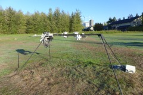 Radiation measurements at the UBC Climate Station |
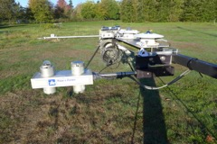 Radiometers |
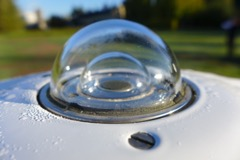 Glass dome of pyranometer [1] |
|
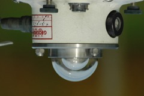 Downward facing pyranometer [2] |
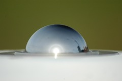 Dome of pyrgeometer [3] |
Downward facing pyrgeometer [4, left] and pyranometer [2, right] |
|
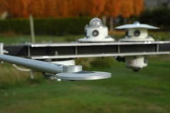 Net radiometer [5, in foreground] |
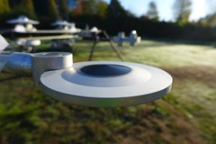 Net radiometer absorber disk [5] |
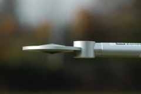 Net radiometer [5] |
|
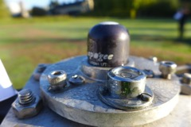 Quantum sensor [6] |
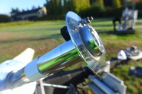 Pyrheliometer [7] |
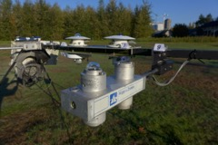 4-component net radiometer [9] |
|
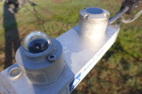 Pyranometer (front) and pyrgeometer (back) 4-component net radiometer [9] |